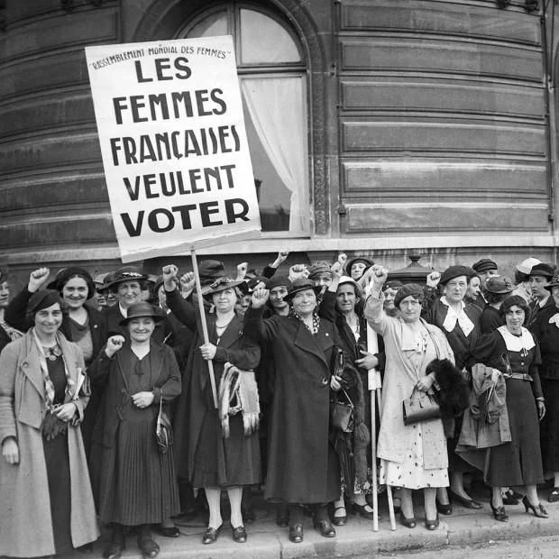

Mémoire
21 avril 1944, les femmes obtiennent le droit de vote et d’être élues
Date indiquée par Facebook · 21 avril 2026
Repères éditoriaux
Le 24 mars 1944, le communiste Fernand Grenier défend à l’Assemblée consultative d’Alger l’amendement qui rend les femmes électrices et éligibles dans les mêmes conditions que les hommes. L’ordonnance du 21 avril 1944 inscrit cette conquête dans son article 17.
Texte conservé avec la publication
21 avril 1944 - Les femmes obtiennent le droit de vote et le droit d'être élues.
C'est par un amendement déposé par le communiste Fernand Grenier*, le 24 mars 1944 à l'Assemblée consultative d'Alger, que le droit de vote des femmes est enfin reconnu.
Cet amendement disait : "Les femmes seront électrices et éligibles dans les mêmes conditions que les hommes".
* Fernand GRENIER
Né le 9 juillet 1901 à Tourcoing (Nord)
Député de la Seine de 1937 à 1940
Membre de la première et de la seconde Assemblée nationale constituante
Député de la Seine de 1946 à 1958
Décédé le 12 août 1992 à St Denis (Seine St Denis)

Sources
Archive rouge · export Facebook · AR-0002-FB-00810
À lire aussi · À Niort, appel à se rassembler en mémoire de Lyhanna et en soutien aux victimes